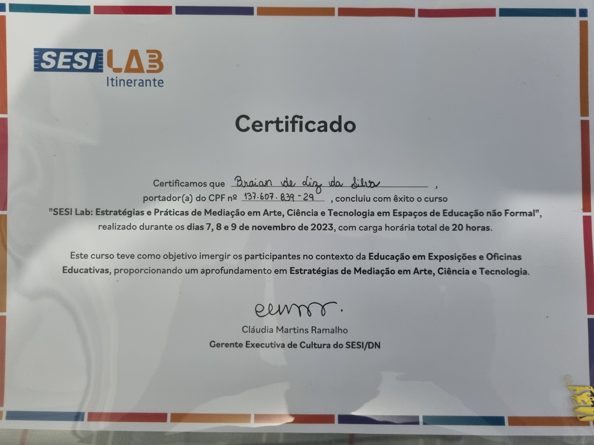

Certificados de Ensino Básico
Certificado de Ensino Fundamental

Certificado de conclusão do Ensino Fundamental de 2014 até 2022.
Certificados de Cursos
Curso de Lógica de Desenvolvimento de Sistemas

Boletins

Boletim Final 2º Ano do Ensino médio, estive entre os 10 menlhores da Turma
Participações Voluntárias
Certificado de Trabalho Voluntário em Torneio de
Robótica

Certificado de Trabalho voluntário no torneio regional de robótica
da FLL
(Fisrt Lego Legue) onde Ajudei a montar o evento, com a
organização, e também
auxiliei a guiar turmas de escolas visitantes e equipes
competidoras pela a escola, duração de 40 horas
Certificado de Partipação voluntária no
SESI-Lab

O SESI-LAB se trata de um museu interativo, que fica em Brasilía,
porém na Inauguração da
Escola SESI de Referência pela 1º vez o SESI-LAB saiu de
Brasilia e trouxe para Joinville uma
Filial para o evento, onde atuei como Voluntário.
Participação Na ONHB
 Baixar Certificado
Baixar Certificado